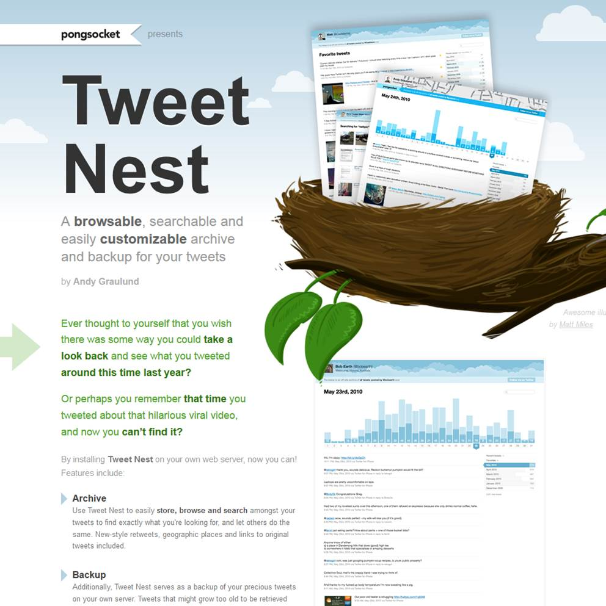

Tweet Nest

Ever since Twitter switched to their new API I have wanted to find a new way to get a self-hosted Twitter archive of my own tweets. Thankfully, I stumbled upon this great tool. I am now again hosting my own tweets, which can be updated automatically through a cron job.